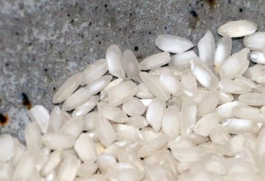
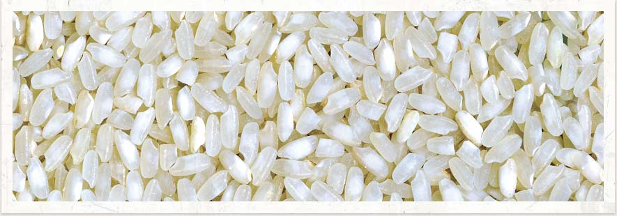
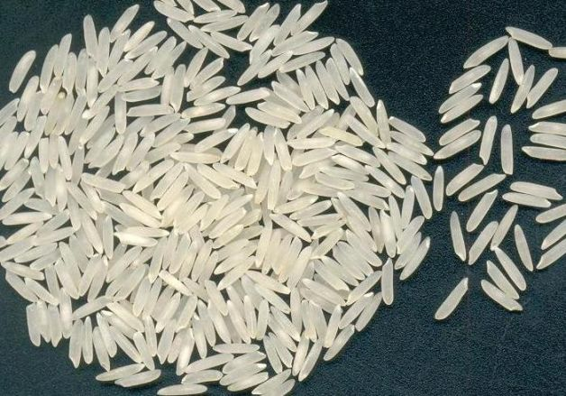

Torna indietro
Torna indietro
Grazie al suo alto contenuto di amido resiste bene alla cottura e tende ad aumentare notevolmente di volume assorbendo l'acqua fino a cinque volte l'equivalente del suo peso, ed è per questo ideale per i risotti.
Riso Arborio
Ricco di amido, ha grande capacità di assorbimento ed è perfetto per la preparazione di risotti e per le cotture al forno.
Riso Baldo
Ha chicchi lunghi e affusolati e quando cuoce emette un aroma di sandalo e nocciola. E' ideale per la preparazione di piatti unici.
Riso Basmati
Ha chicchi grossi, consistenti, e affusolati che assorbono facilmente gli odori e si legano con armonia agli ingredienti. spesso è chiamato "re dei risi".
Ha i chicchi lunghi, grossi e tondeggianti. E'molto apprezzato in cucina per la sua estrema versatilità, che lo rende adatto a qualsiasi tipo di cottura, anche nelle minestre e gratinato in forno.